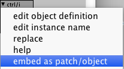
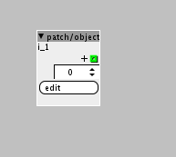

Hey 
I was wondering how you turn an embedded object into an "real" object that can be saved to harddisc? I never really understood that part. I remember reading about people doing it in here, but now how they did it.
Any help appreciated.
Thanks.

Hey
I was wondering how you turn an embedded object into an "real" object that can be saved to harddisc? I never really understood that part. I remember reading about people doing it in here, but now how they did it.
Any help appreciated.
Thanks.
go to file -> preferences
see the path of your local folder, put your custom axs and axo inside such folder
Thanks man
But problem is that an embedded object is either a .axs or a .axo. So I cant move it into my library. Or did I miss something here? When you create and embedded object (from a factory pbject for example) is it saved to disc somewhere?
That is basicly what I am trying to find out how to do, making the embedded object into a .axo. So it is the step befor moving into library.
Are you talking about objects or subpatches?
Because in either case you'll have to save the object inside that folder (with the correct file extension)
In case of subpatches (created with patch/patcher) you'll have to do edit (opens the subpatch window) -> file -> save as
and at this point you should select your local folder and put the object there
In case of objects (patch/object) you can do edit -> file -> add to library, then select home library in the library tab and name it whatever you want.
Notice that when you save such objects, the patch/patcher or patch/object inside the patch you're editing remain unmodified: if you apply changes to such objects, those won't be propagated to the "real" object in the folder (so remember to save often)
An embedded object made like this. So I guess it is a "patch/object"


That example embedded object it not to be found on the harddisc anywhere.
You just have to do file -> add to library
In this case if you do it, you'll probably encounter some duplicate uuid errors, but that's the procedure
Ahh yes, now I got it Cool thanks.
First push edit and then go to file. I never used the object editor so I didnt notice that the file dropdown menu changed when pushing "edit" button on a patch/object.
To create your own library object:
If you want to use an existing object as template for your own object:
Or if you want to start from a blank object, create a "patch/object" object
sorry for the n00bness , i'm on mac osx, i can't find the "copy to library" command in the file menu or elsewhere...is something changed?